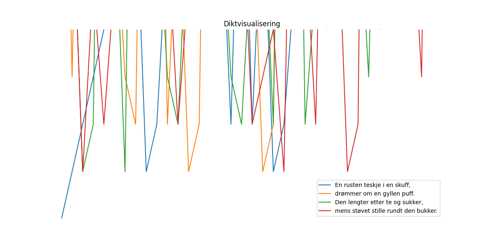

En rusten teskje i en skuff, drømmer om en gyllen puff. Den lengter etter te og sukker, mens støvet stille rundt den bukker.

import matplotlib.pyplot as plt
import numpy as np
# Tekst fra diktet
tekst = """En rusten teskje i en skuff,
drømmer om en gyllen puff.
Den lengter etter te og sukker,
mens støvet stille rundt den bukker."""
# Antall linjer i diktet
antall_linjer = len(tekst.splitlines())
# Lager en figur og akser
fig, ax = plt.subplots(figsize=(12, 6))
# Lager en graf som representerer linjene i diktet
for i in range(antall_linjer):
linje = tekst.splitlines()[i]
# Konverterer hver linje til en liste av tegn
tegn = list(linje)
# Lager en 2D-array med tegnene
data = np.array(tegn)
# Plotter hver linje som en linje
ax.plot(data, label=linje)
# Setter tittelen på figuren
ax.set_title("Diktvisualisering")
# Setter labelene på aksene
ax.set_xlabel("Ordhøyde")
ax.set_ylabel("Ordposisjon")
# Setter grenser for aksene
ax.set_xlim(0, len(linje))
ax.set_ylim(0, antall_linjer)
# Legger til en legend
ax.legend()
# Fjerner akselinjer
ax.axis('off')
# Lagrer figuren
plt.savefig(output_path)execution_ok=True fallback_used=False image_ok=True